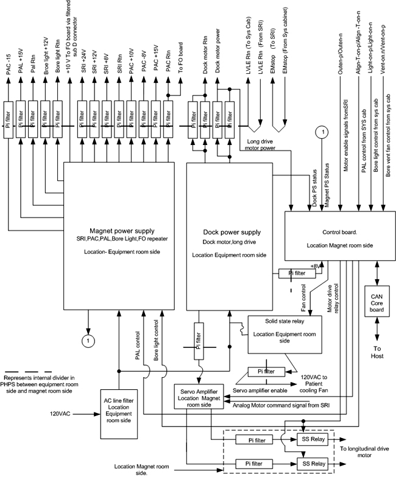

Proprietary to General Electric Company
Direction 5440000, Rev# 5
Signa HDxt Service Methods
Module Version 1.0, Version Date 4/25/07
Proprietary to General Electric Company |
The PHPS (Patient Handling Power Supply) module consists of two AC-DC power supplies, an AC relay, a control board assembly, a servo amplifier for longitudinal motor control, and Can Core Communications Board for communicating the PHPS status to the host. The PHPS module resides on the penetration panel and functionally replaces a portion of the SSM (System Support Module). A brief description of the component functionality is shown below:
The first power supply is the Magnet Room PS and provides the following functionality:
Switched DC to the PAL (Patient Alignment Light).
Switched DC to the Bore Light.
DC power to the SRI (Scan Room Interface).
DC power to the PAC (Physiological Acquisition Controller).
DC power to the FO (Fiber Optic) Repeater.
The second power supply is the Table PS and provides the following functionality:
DC power to the Dock Motor.
DC power to the Servo Amplifier (base input voltage).
DC power to the Control Board (which also supplies the CAN Core Communication board).
The AC relay provides switched 120VAC power to the Bore Vent Fan and is controlled by the control board assembly.
The Control Board Assembly interfaces serially to the RF/System cabinet to control the PAL, Bore Light, and the Bore Vent Fan. The Control Board Assembly also controls the servo amplifier used to drive the longitudinal drive motor and associated relay outputs in line with the output of the servo amplifier. The Control Board Assembly status of these signals and the servo amplifier faults, are monitored by the host via the CAN Core Communication (CCC) board mounted as a daughter board on the control board. The Control Board Assembly receives the current feedback signal for monitoring the dock motor current.
The Servo Amplifier is a Pulse Width Modulated (PWM) device used for powering the longitudinal motor. The Servo Amplifier uses the 42 volts from the Table supply as it’s base input voltage.
The CAN Core Communication (CCC) board monitors the health of the voltages on the control board and the status of the servo amplifier, and communicates this information to the host. The CCC board receives digital I/O signals and analog inputs corresponding to the power supply voltages from the Control Board. The digital I/O of the CCC operates at 3.3V so all logic levels must be converted to this level on the Control Board. Additionally, the CCC gets an isolated 24V from an external source for powering the CAN communications.
A block diagram for the PHPS system is shown in Illustration 1.
Illustration 1: PHPS BLOCK DIAGRAM
